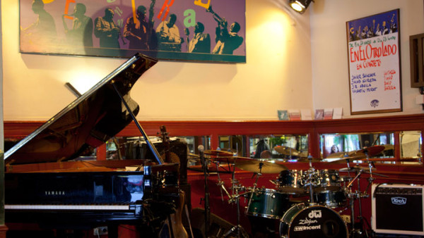
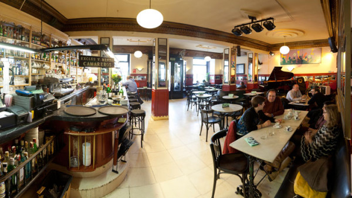

" Café central, más de 30 años de conciertos
La carta

Además de ofrecer unos deliciosos y económicos desayunos, al mediodía un estupendo menú con platos de comida sana y sabrosa, en la noche tenemos una carta muy variada que ofrece platos para picar, compartir y cenar.
Programa
Además de ofrecer unos deliciosos y económicos desayunos, al mediodía un estupendo menú con platos de comida sana y sabrosa, en la noche tenemos una carta muy variada que ofrece platos para picar, compartir y cenar.
Reservas
Además de ofrecer unos deliciosos y económicos desayunos, al mediodía un estupendo menú con platos de comida sana y sabrosa, en la noche tenemos una carta muy variada que ofrece platos para picar, compartir y cenar.